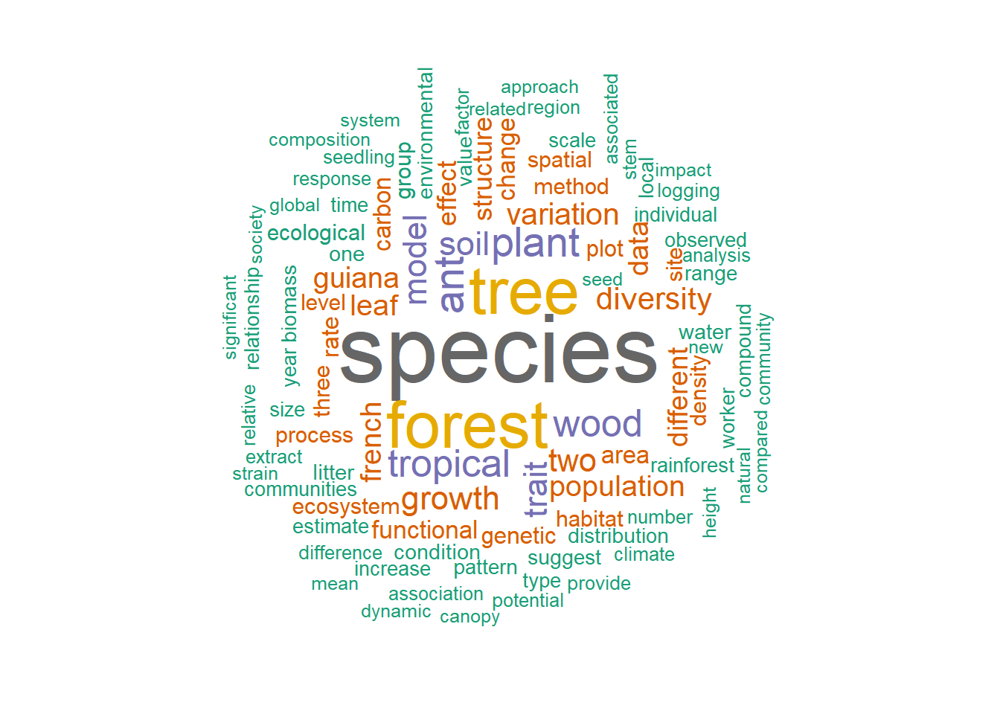

3 Analyse des résumés
Les résumés des publications se trouvent dans la colonne AB de la base importée par bibliometrix. Ils sont en Anglais.
3.1 Corpus
Le package tm permet de constituer un corpus.
library("tm")
M$AB %>%
VectorSource %>%
VCorpus %>%
tm_map(PlainTextDocument) %>%
tm_map(content_transformer(tolower)) ->
MonCorpusLa fonction tm_map permet d’appliquer une fonction quelconque à chaque élément du corpus, c’est-à-dire à chaque résumé. Les fonctions standard, n’appartenant pas au package tm, doivent être appliquées par l’intermédiaire de la fonction content_transformer pour ne pas dégrader la structure du corpus : dans le code précédent, la fonction tolower est appliquée à chaque résumé pour le passer en minuscules, alors que la création de corpus est en majuscules.
3.2 Nettoyage du corpus
Des mots sémantiquement identiques ont plusieurs formes. Le traitement le plus rigoureux consiste à les réduire à leur radical mais le résultat n’est pas très lisible. La fonction stemDocument permet de le faire : il suffit de l’utiliser à la place de PlainTextDocument dans le code ci-dessus. Un bon compromis consiste à supprimer les formes plurielles, par une fonction ad-hoc : ce sera fait plus tard.
Les déterminants, conjonctions, etc. sont les mots les plus fréquents mais n’ont pas d’intérêt pour l’analyse. La fonction removeWords permet de retirer une liste de mots. stopwords fournit la liste de ces mots dans une langue au choix. removeNumbers retire les nombres comme one, two, etc. et la fonction removePunctuation retire la ponctuation.
MonCorpus %<>% tm_map(removeWords, stopwords("english")) %>%
tm_map(removeNumbers) %>%
tm_map(removePunctuation) Une liste de mots complémentaire est nécessaire pour supprimer des mots inutiles mais fréquents. Elle peut être complétée de façon itérative pour retirer des mots parasites du résultat final.
ExtraWords <- c("use", "used", "using", "results",
"may", "across", "high", "higher", "low", "show",
"showed", "study", "studies", "studied", "however",
"can", "our", "based", "including", "within", "total",
"among", "found", "due", "also", "well", "strong",
"large", "important", "first", "known")
MonCorpus %<>% tm_map(removeWords, ExtraWords)3.3 Mots du corpus
L’objectif est de transformer le corpus en un vecteur d’abondance des mots utilisés. TermDocumentMatrix crée un objet spécifique au package tm qui pose des problèmes de traitement. Cet objet est transformé en un vecteur d’abondances.
TDM <- TermDocumentMatrix(MonCorpus, control = list(minWordLength = 3))
AbdMots <- sort(rowSums(as.matrix(TDM)), decreasing = TRUE)Le vecteur de mots contient des formes singulières et plurielles. Elles peuvent être regroupées selon un modèle simple : si un mot existe avec et sans s ou es final, la forme singulière est sans s ou es. Des pluriels particuliers peuvent être ajoutés selon les besoins.
# Adapté de https://github.com/mkfs/misc-text-mining/blob/master/R/wordcloud.R
aggregate_plurals <- function (v) {
aggr_fn <- function(v, singular, plural) {
if (! is.na(v[plural])) {
v[singular] <- v[singular] + v[plural]
v <- v[-which(names(v) == plural)]
}
return(v)
}
for (n in names(v)) {
n_pl <- paste(n, 's', sep='')
v <- aggr_fn(v, n, n_pl)
n_pl <- paste(n, 'es', sep='')
v <- aggr_fn(v, n, n_pl)
# cas particuliers
if (endsWith(n, "y")) {
n <- substr(n, 1, nchar(n)-1)
n_pl <- paste(n, 'ies', sep='')
}
if (n == "genus") {
n_pl <- "genera"
v <- aggr_fn(v, n, n_pl)
}
}
return(v)
}
AbdMots %<>% aggregate_plurals3.4 Nuage de mots
Le résultat final est un nuage de mots.
library("wordcloud")
df <- data.frame(word = names(AbdMots), freq = AbdMots)
wordcloud(df$word, df$freq, max.words = 100, random.order = FALSE,
rot.per = 0.35, use.r.layout = FALSE, colors = brewer.pal(8,
"Dark2"))